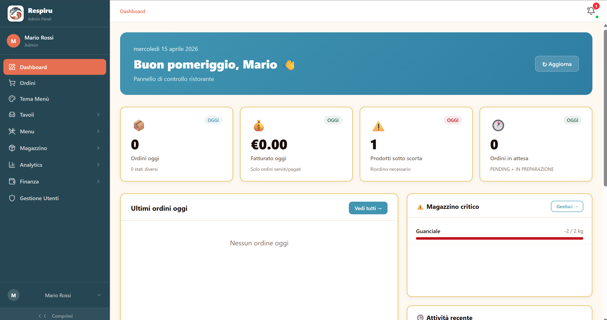
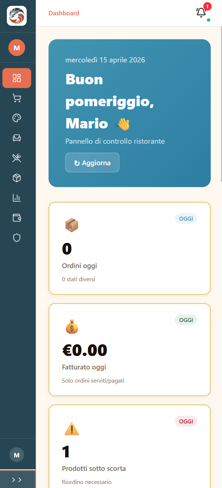
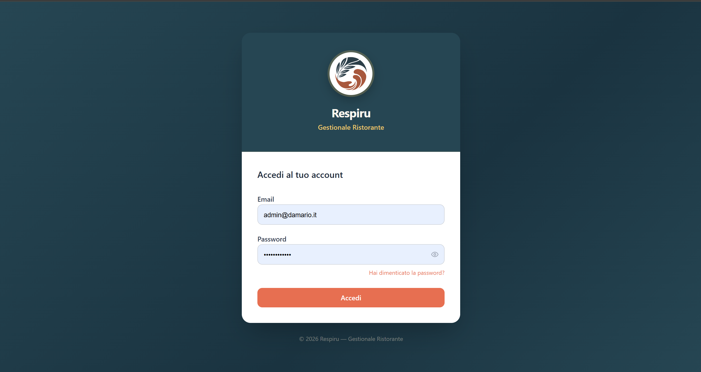

Gestionale horeca nato per semplificare
Meno caos. Più controllo. Finalmente respiri.
Respiru collega ciò che oggi lavora separato nel tuo locale: una vendita aggiorna il magazzino, il magazzino comunica con le ricette, gli sprechi incidono sui costi. Vendite e prenotazioni diventano dati su cui decidere — tutto nello stesso sistema. Il valore nasce dalle connessioni.
Cassa Magazzino Sprechi Menu Prenotazioni Finanze AI
Per ristoranti, bar e horeca
Supporto umano
Setup guidato
Situazione di oggi
Locale sotto controllo
Respiru AI
Domani prepara più scorte per il servizio serale.
Menu e prenotazioni
Piatti aggiornati
Tavoli disponibili
Landing collegata
Magazzino
Olio EVO
Riordino consigliato
Il problema non è lavorare tanto
È dover inseguire tutto, ogni giorno.
Quando cassa, scorte, personale, prenotazioni e costi vivono in posti diversi, anche un locale sano diventa faticoso da leggere. Respiru nasce per togliere rumore e riportare ordine.
Informazioni sparse
Excel, app diverse, messaggi, fogli e memoria del titolare.
Un unico ecosistema
Le stesse aree, ma collegate tra loro: quello che succede in un punto si vede subito negli altri.
Il cavallo di battaglia di Respiru
Il magazzino che si aggiorna mentre lavori.
Vendi un piatto. Respiru conosce la ricetta. Gli ingredienti vengono scalati. Le scorte si aggiornano. Tu gestisci il locale — Respiru tiene insieme ciò che succede.
-
Comanda Un piatto ordinato, come sempre.
-
Ricetta Respiru sa già cosa serve per farlo.
-
Ingredienti Le quantità vengono scalate in automatico.
-
Magazzino Le scorte si aggiornano da sole, mentre lavori.
-
Food cost Il costo del piatto resta sempre sotto controllo.
-
Margine Sai subito cosa resta, non a fine mese.
Tu gestisci il locale. Respiru tiene insieme ciò che succede.
Non è una funzione isolata
Un'azione. Tutto il sistema reagisce.
Il magazzino non lavora da solo. La stessa comanda muove insieme scorte, scadenze, sprechi e conti.
Comanda
Ricetta
Ingredienti
Magazzino
Scorte
Scadenze
Sprechi
Costi
Margine
Una vendita non è soltanto una vendita. È l'inizio di una reazione.
Non la promessa. Il prodotto.
Questo è Respiru.
Poche schermate, viste da vicino: è l'app reale, non una demo disegnata per il sito.


Respiru Stories
Piccoli dettagli. Grandi numeri.
Le storie dietro ai dettagli: casi che mostrano come piccole inefficienze, ripetute ogni giorno, diventino margine.
AI pratica, non spettacolare
Meno lavoro manuale, non un'AI da spettacolo.
Niente robot, niente cervelli digitali: l'AI di Respiru legge documenti noiosi al posto tuo. Guarda cosa succede con una bolla fornitore.
-
Foto della bolla La scatti con il telefono, come sempre.
-
Respiru legge i prodotti Righe, quantità e prezzi riconosciuti in automatico.
-
Tabella estratta I dati diventano una lista pronta da controllare.
-
Verifica umana Dai un'occhiata, correggi se serve.
-
Inserimento in magazzino Nessuna riga da ricopiare a mano.
L'AI accelera il lavoro. La decisione resta umana.
Cosa cambia davvero
Più lucidità nelle decisioni, meno stress nella gestione.
Meno confusione operativa
Ogni reparto lavora sullo stesso sistema: sala, cucina, cassa e gestione si parlano.
Meno sprechi nascosti
Vedi cosa si perde, perché succede e dove intervenire senza aspettare fine mese.
Meno tempo perso
Il magazzino si aggiorna, il menu resta coerente e le attività ripetitive si riducono.
Più controllo economico
Incassi, costi e margini diventano più facili da leggere e spiegare.
Semplice anche per chi non ama i gestionali
Respiru è pensato per essere adottato senza trauma.
Non ti consegniamo un account e un manuale. Configuriamo insieme il locale, i ruoli, i prodotti e le informazioni necessarie per partire. L'obiettivo è far entrare Respiru nel tuo lavoro senza fermarlo.

Setup guidato
Ti aiutiamo a portare dentro menu, prodotti, ruoli e abitudini del locale.
Formazione all'avvio
Ti mostriamo come usarlo con il tuo locale reale, non con dati d'esempio.
Interfacce chiare
Ogni schermata mostra poche cose, ma quelle giuste.
Supporto vicino
Una tecnologia moderna con un tono umano, diretto e affidabile.
Respiru Founders
Un sistema completo. Un prezzo semplice.
Non Basic, Pro o Enterprise: un solo sistema completo, con un prezzo che dipende solo da quante sedi hai.
Prima sede
€99 /mese
Cassa, magazzino, sprechi, menu, prenotazioni, finanze e AI: tutto collegato, tutto incluso.
Sedi aggiuntive
€49 /mese
Ogni sede in più, collegata allo stesso sistema.
Disponibile per i primi 35 clienti Respiru. La tariffa Founder resta invariata finché rimani cliente attivo e continuativo.
Terminati i 35 posti Founder entrerà in vigore il nuovo listino Respiru.
Domande frequenti
Le risposte rapide per capire come funziona Respiru.
Perché probabilmente oggi cassa, magazzino e conti vivono in strumenti diversi che non si parlano. Respiru li collega: quello che succede in un punto si vede subito negli altri.
Ne parliamo in demo caso per caso. L'obiettivo non è stravolgere quello che già funziona, ma collegarlo al resto del sistema.
Sì. Respiru è pensato per essere semplice, guidato e chiaro anche per chi non ama i gestionali complicati, e ti accompagniamo nella formazione iniziale.
La tariffa Founder è €99/mese per la prima sede e €49/mese per ogni sede aggiuntiva, disponibile per i primi 35 clienti. Resta invariata finché rimani cliente attivo.
Sì. Ogni sede aggiuntiva si collega allo stesso sistema, con la tariffa dedicata alle sedi aggiuntive.
Dipende dal locale, ma l’obiettivo è partire in modo guidato, configurando le parti essenziali senza bloccare il lavoro quotidiano.
Sì, perché rende più visibili consumi, scorte e prodotti sprecati, aiutandoti a capire dove intervenire.
Sì. Puoi aggiornare piatti, prezzi, disponibilità e informazioni senza dover dipendere ogni volta da qualcuno.
Aiuta a leggere bolle e fatture, aggiornare il magazzino, individuare sprechi e segnalare scorte basse. La decisione finale resta sempre umana.
No. Respiru nasce per adattarsi al locale e portare ordine gradualmente, non per stravolgere abitudini sane.
Vediamolo insieme
Vediamolo sul tuo locale.
In 20 minuti partiamo da come lavori oggi e ti mostriamo cosa cambierebbe collegando le diverse aree del locale.
Vediamolo sul tuo ristorante
Raccontaci il tuo locale.
Bastano due minuti: capiamo come lavori oggi e ti mostriamo cosa cambierebbe con Respiru.